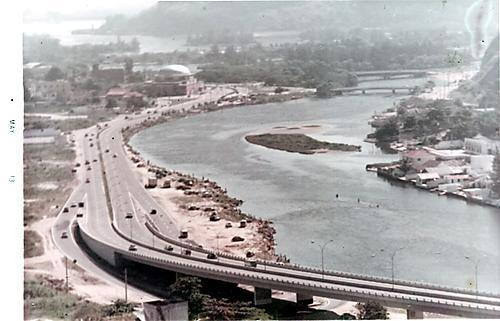
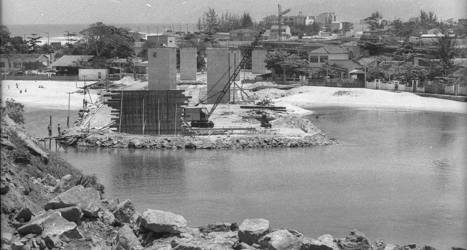
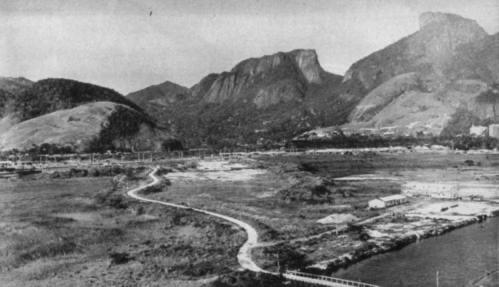
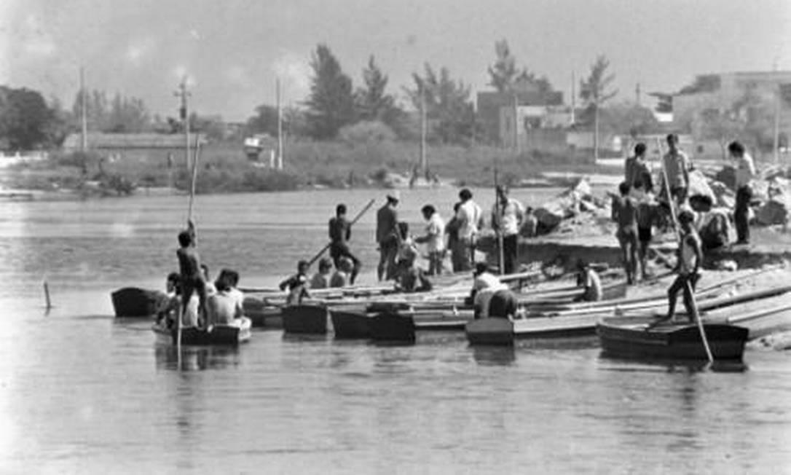
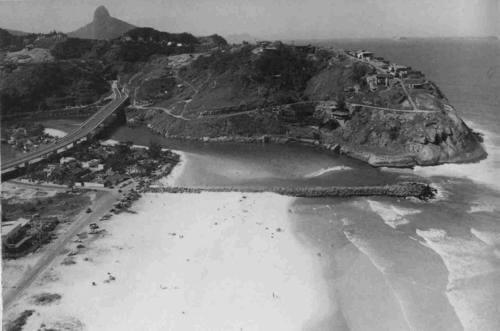
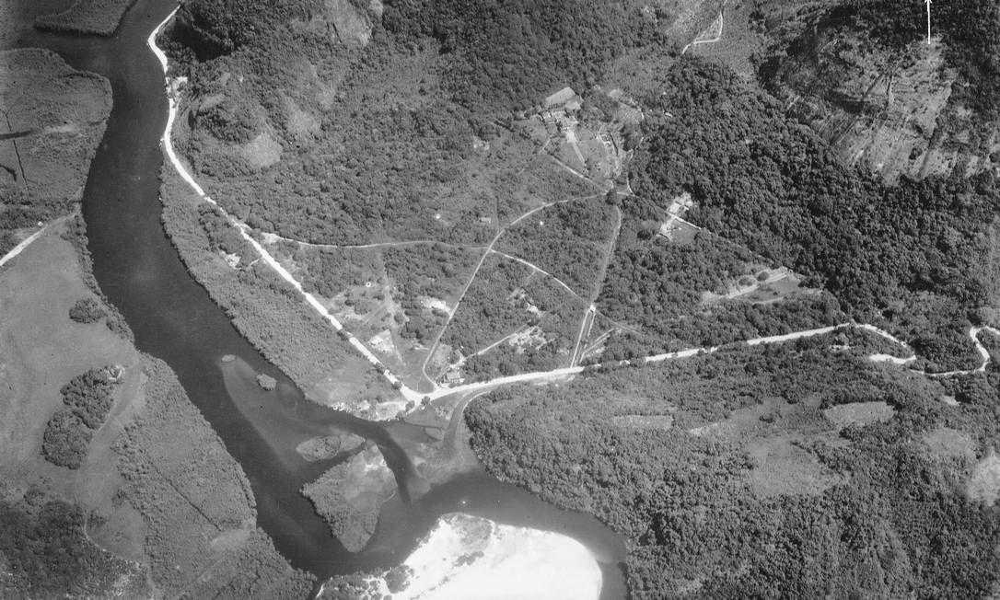

História e Cultura
Uma viagem no tempo pelas memórias, paisagens e pela essência que formou a Ilha da Gigóia.








O Passado da Ilha
A Ilha da Gigóia guarda um passado rico e fascinante. Antes de se tornar o refúgio boêmio e gastronômico que conhecemos hoje, a região era marcada pela pacata vida de pescadores e por uma paisagem natural quase intocada, contrastando com o crescimento urbano ao seu redor.
Através destas imagens históricas, podemos ver marcos importantes, como a época da construção das grandes vias de acesso (como o Elevado) e a simplicidade das antigas casas e barcos. É uma viagem no tempo que nos ajuda a valorizar ainda mais a cultura local e a preservação desse oásis no meio do Rio de Janeiro.
Memória Viva
- ✓ Fotografias raras da construção da região
- ✓ A origem através das vilas de pescadores
- ✓ A evolução arquitetônica e natural das ilhas